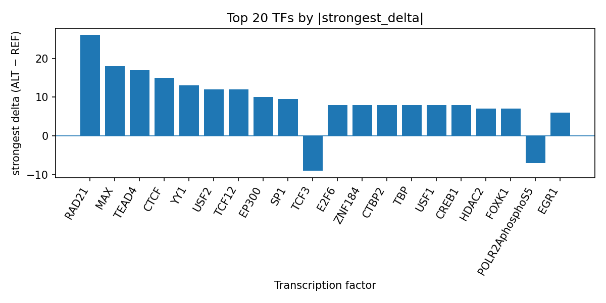

Author: snv-tf-researcher
Autosomal dominant compelling helio-ophthalmic outburst syndrome, also known as photic sneeze reflex, is a light-triggered sneezing phenotype that has been described as a hereditary condition and investigated in family, population, and GWAS studies [1-10]. Here, we computationally prioritized rs1691483 (chr3:84905052 T>C) as a candidate regulatory variant with a GWAS p-value of 3.0 × 10^-8 and an absolute effect size of 0.6043. AlphaGenome TF ChIP-seq prediction outputs suggest that the ALT allele may alter binding of multiple transcription factors, with the strongest predicted positive shifts for RAD21, MAX, TEAD4, CTCF, and YY1, and a predicted inhibition of TCF3 and POLR2AphosphoS5. These results prioritize rs1691483 as a potential regulatory locus for follow-up, while remaining strictly computational and requiring experimental validation.
Autosomal dominant compelling helio-ophthalmic outburst syndrome (ACHOO syndrome), also termed photic sneeze reflex or photic sneeze syndrome, has long been described as a light-induced sneezing phenotype with apparent hereditary features [7,8,10]. Clinical reports and reviews describe the syndrome as an underrecognized condition that can be relevant in daily life and in ophthalmic or procedural settings because bright light exposure may trigger sneezing episodes [1-3,5,7,8]. Population studies have also reported measurable prevalence in different cohorts and have suggested that the phenotype may be polygenic [4,5]. GWAS analyses in Chinese and Japanese populations identified associated loci, including intergenic signals on 3p12.1, supporting a genetic contribution to the phenotype [4,5].
Because GWAS variants are often noncoding, computational interpretation can help prioritize regulatory candidates for further study. In this manuscript, rs1691483 on chromosome 3, annotated as a regulatory_region_variant and selected here by effect size, was examined using AlphaGenome TF ChIP-seq predictions. AlphaGenome outputs are computational predictions rather than experimental measurements, so the results below are presented as hypotheses for experimental validation.
The trait analyzed was autosomal dominant compelling helio-ophthalmic outburst syndrome (EFO_0007887). The candidate variant was rs1691483 (chr3:84905052 T>C; risk allele rs1691483-A), selected by effect size (absolute log odds ratio effect size 0.6043; GWAS p = 3.0 × 10^-8). The variant consequence was provided as regulatory_region_variant.
A run-level workflow summary is shown in the pipeline figure (Figure 1). Briefly, the analysis framework integrates disease and association retrieval, effect-size-based SNV filtering, consequence annotation, REF allele checking, AlphaGenome TF ChIP-seq prediction, TF-level summarization, literature retrieval, and manuscript synthesis. AlphaGenome is used here as a computational predictor of allele-dependent TF ChIP-seq signal changes; these predicted outputs are not direct experimental measurements.
Figure 1. Overview of the snv-tf-researcher workflow used for this run. The pipeline links trait and association context, variant filtering and annotation, AlphaGenome TF ChIP-seq prediction, TF-level summarization, and literature-aware manuscript generation.
The analyzed variant rs1691483 lies on chromosome 3 at position 84,905,052 (T>C) and was selected on the basis of effect size for the trait autosomal dominant compelling helio-ophthalmic outburst syndrome. The variant is annotated as a regulatory_region_variant, consistent with a potential noncoding regulatory interpretation. Because the variant was selected by effect size, it may be in linkage disequilibrium with the true causal variant, and this possibility should be considered when interpreting the results.
AlphaGenome TF ChIP-seq predictions suggest that the ALT allele may reshape a broad set of transcription factor signals. The top factors in the run are summarized in top_tf_effects.tsv, which serves as the run-folder reference table for the ranked outputs.
The strongest predicted positive shift was observed for RAD21, with 16 tracks and a maximum signed delta of 26.0, followed by MAX (18.0), TEAD4 (17.0), CTCF (15.0), and YY1 (13.0). Additional promoted TFs included USF2, TCF12, EP300, SP1, CREB1, TBP, USF1, E2F6, CTBP2, ZNF184, HDAC2, FOXK1, JUND, FOXP4, ZNF462, CHD2, EGR1, KDM1A, TAF1, ASH2L, TEAD1, ZNF423, and others listed in the run summary. In contrast, the clearest predicted inhibitory signals included TCF3 (max delta -9.0), POLR2AphosphoS5 (max delta -7.0), and AGO2 (max delta -6.0).
The overall pattern is visualized below, where the bars represent the strongest signed predicted delta for each top transcription factor (Figure 2).

Figure 2. Top transcription factors at rs1691483 ranked by absolute predicted ALT-vs-REF binding delta from AlphaGenome TF ChIP-seq tracks. Positive bars indicate predicted promotion and negative bars indicate predicted inhibition, with the bar height reflecting the strongest signed delta observed for each factor.
The computational predictions suggest that rs1691483 may alter a regulatory sequence in a way that affects multiple transcriptional regulators, rather than a single isolated factor. The prominence of RAD21, CTCF, and YY1 is consistent with the general idea that noncoding variants can influence chromatin-associated regulatory architecture, while predicted changes in MAX, TEAD4, SP1, CREB1, USF1/2, and other TFs may indicate altered motif or context-dependent occupancy. Because AlphaGenome provides in silico predictions, these interpretations remain provisional and require experimental validation.
The disease context is also consistent with a regulatory mechanism being relevant. ACHOO syndrome has been described as a hereditary, light-triggered sneezing phenotype in clinical reports and reviews [1,7,8,10], and GWAS studies have identified intergenic association signals in photic sneeze phenotypes [4,5]. The present computational result therefore prioritizes rs1691483 as a candidate variant for follow-up in the broader regulatory landscape of the trait, but does not establish mechanism.
This analysis is limited by several factors. First, AlphaGenome outputs are computational predictions, not measurements, and should not be interpreted as direct evidence of TF binding. Second, the candidate variant was selected by effect size and may be in linkage disequilibrium with the true causal variant. Third, the literature available for this run is limited to reports on photic sneeze reflex/ACHOO syndrome, so no trait-specific mechanistic conclusion can be drawn from the cited references alone. Finally, the current output does not include experimental chromatin, expression, or perturbation data, so experimental validation is required.
Senthilkumaran S, Arathisenthil SV, Girija S, et al. Photic sneeze reflex: When light becomes lethal. Am J Emerg Med. 2026;102:170-172. PMID: 41619396. doi:10.1016/j.ajem.2026.01.042
Shetty PA, Bhat S, Jain V, et al. Implication of photic sneeze reflex in ophthalmology. Indian J Ophthalmol. 2023;71(6):2629. PMID: 37322719. doi:10.4103/IJO.IJO_107_23
Scherbakova I, Casper DS, Bearelly S, Odel JG. Acute Solar Retinopathy and the Autosomal Dominant Compelling Helio-Ophthalmic Outburst Syndrome. J Neuroophthalmol. 2020;40(2):243-245. PMID: 31609836. doi:10.1097/WNO.0000000000000851
Sasayama D, Asano S, Nogawa S, et al. Possible association between photic sneeze syndrome and migraine and psychological distress. Neuropsychopharmacology Reports. 2019;39(3):217-222. PMID: 31287245. doi:10.1002/npr2.12067
Wang M, Sun X, Shi Y, et al. A genome-wide association study on photic sneeze reflex in the Chinese population. Sci Rep. 2019;9(1):4993. PMID: 30899065. doi:10.1038/s41598-019-41551-0
Bobba S, Spencer SKR, Fox OJK, et al. Management of the photic sneeze reflex utilising the philtral pressure technique. Eye (Lond). 2019;33(7):1186-1187. PMID: 30783255. doi:10.1038/s41433-019-0368-4
Kulas P, Hecker D, Schick B, et al. Investigations on the prevalence of the photo-induced sneezing reflex in the German population, a representative cross-sectional study. Eur Arch Otorhinolaryngol. 2017;274(3):1721-1725. PMID: 27568353. doi:10.1007/s00405-016-4256-2
Sevillano C, Parafita-Fernández A, Rodriguez-Lopez V, et al. A curious fact: Photic sneeze reflex. Autosomical dominant compelling helio-ophthalmic outburst syndrome. Arch Soc Esp Oftalmol. 2016;91(7):305-309. PMID: 26896062. doi:10.1016/j.oftal.2016.01.011
García-Moreno JM. [Photic sneeze reflex or autosomal dominant compelling helio-ophthalmic outburst syndrome]. Neurologia (Barcelona). 2006;21(1):26-33. PMID: 16525923.
García-Moreno JM, Páramo MD, Cid MC, et al. [Autosomal dominant compelling helio-ophthalmic outburst syndrome (photic sneeze reflex). Clinical study of six Spanish families]. Neurologia (Barcelona). 2005;20(6):276-282. PMID: 16007510.